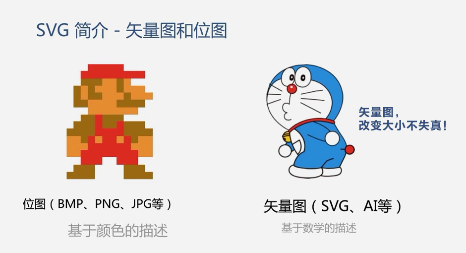

SVG是一种图像文件格式，它的英文全称为Scalable Vector Graphics，意思为可缩放的矢量图形。它是基于XML（Extensible Markup Language）， 由World Wide Web Consortium（W3C）联盟进行开发的。严格来说应该是一种开放标准的矢量图形语言，可让你设计激动人心的、高分辨率的Web图形页面。 用户可以直接用代码来描绘图像，可以用任何文字处理工具打开SVG图像，通过改变部分代码来使图像具有交互功能，并可以随时插入到HTML中通过浏览器来观看。
- 1、SVG 指可伸缩矢量图形 (Scalable Vector Graphics)；
- 2、SVG 用来定义用于网络的基于矢量的图形；
- 3、SVG 使用 XML 格式定义图形；
- 4、SVG 图像在放大或改变尺寸的情况下其图形质量不会有所损失；
- 5、SVG 是万维网联盟的标准；
- 6、SVG 与诸如 DOM 和 XSL 之类的 W3C 标准是一个整体 ；
SVG标签：<svg xmlns="http://www.w3.org/2000/svg" width="800" height="600" /> 在这里绘制SVG图形 </svg>
* SVG命名空间声明是通过xmlns 属性提供的。
请注意，命名空间仅仅只是一些字符串，所以SVG上那些看起来像URI的命名空间并不重要。因为URIs的唯一性从而被广泛使用，它的本意并不是要“链接”到某个地址。（实际上URIs被如此频繁地使用是“命名空间 URI"普遍使用而不是”命名空间的名字“被使用。）